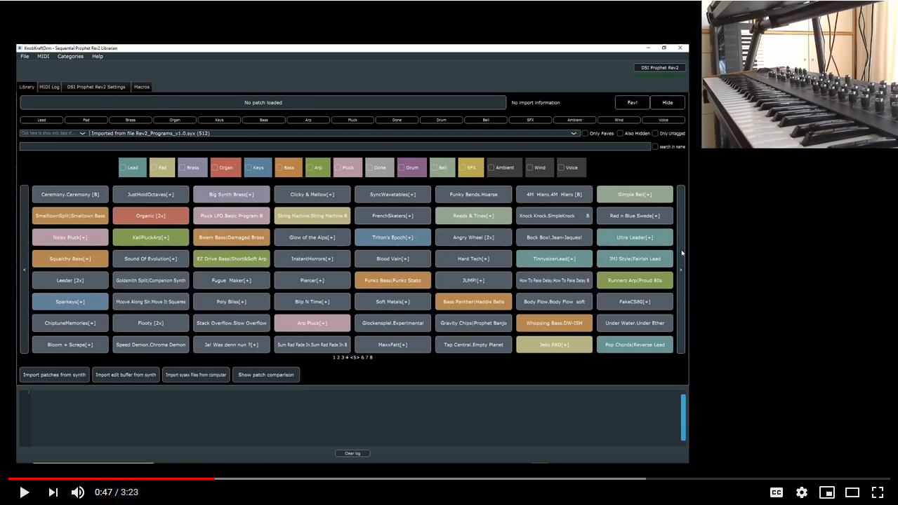

A library you can search
Import compatible banks and patch files. Duplicate recognition uses synth-specific fingerprints; names alone do not decide whether two patches are the same.
Import sounds →Browse, organise and back up patches for supported hardware synthesizers. Keep your collection on the computer. Make the music on your synth.
Free & open source · Windows, macOS & Linux
Latest release & release notes ↗

Bring compatible patch files and hardware dumps into one searchable collection, then give your favourite sounds a place.
Import compatible banks and patch files. Duplicate recognition uses synth-specific fingerprints; names alone do not decide whether two patches are the same.
Import sounds →Recall or send patches to your connected synth. Send modes and destinations depend on the instrument; auditioning can write stored programs on some synths.
Understand audition modes →Mark favourites, add categories and build ordered lists. Prepare a user bank when you need specific hardware slots. Saving its arrangement and sending it are separate steps.
Work with lists and banks →Find your model and its reported support status. Capabilities vary by synth and installed version. Release availability is checked against 2.10.0; alpha and beta support still needs broader testing.
| Manufacturer | Synth / family | Status |
|---|---|---|
| Loading the compatibility list… | ||
Start with a few sounds and one instrument. The written lessons guide you from connecting MIDI to keeping a useful collection.
Explore LearnSet up MIDI in both directions and check the separate audio path.
Patches, imports, lists, banks and hardware memory, explained.
Load a compatible file, find the result and save a database copy.
Synth adaptations are Python scripts. If you can read a MIDI implementation chart, the programming guide and shared tests can help you add support.